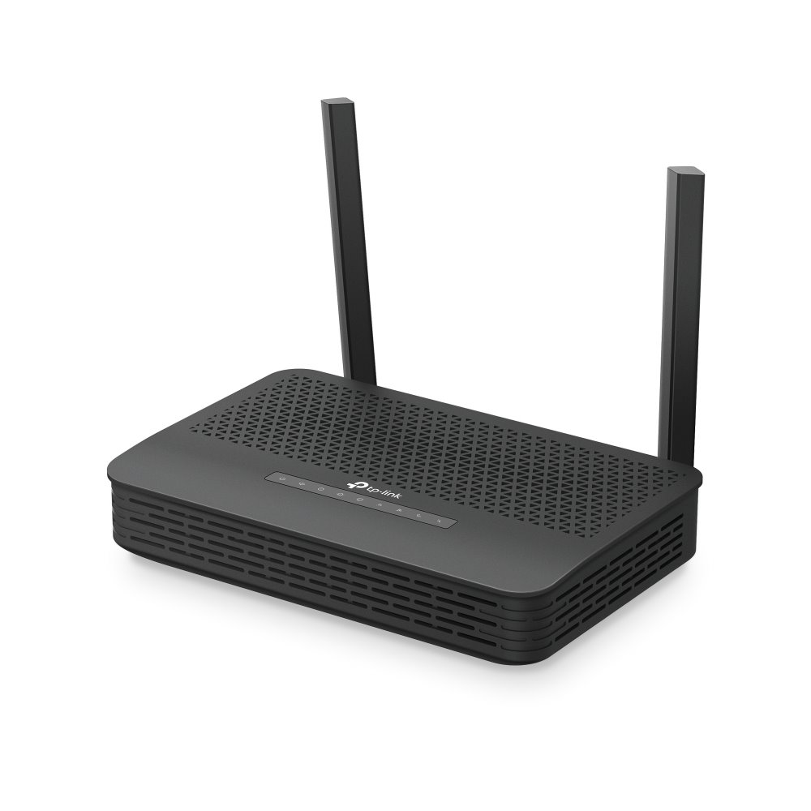
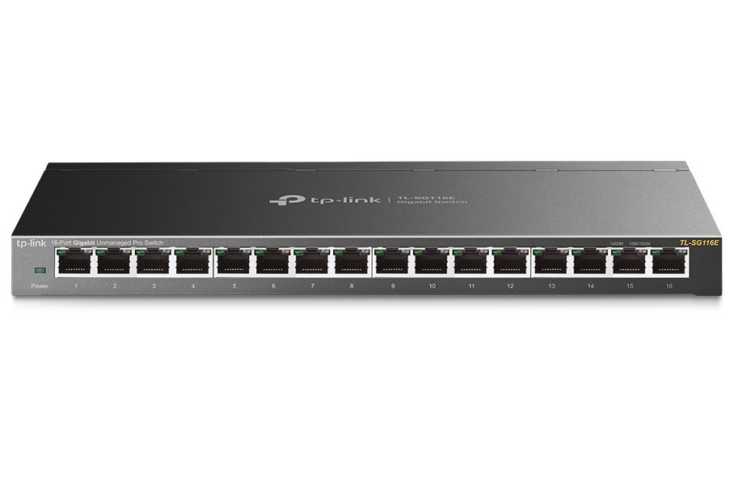

Poznáš zařízení v síti?
Přiřaď zařízení k jejich správné funkci.
Lehká úloha
V síti se setkáš s různými zařízeními. Každé má svou funkci — některá propojují počítače v jedné síti, jiná směrují data mezi sítěmi nebo chrání před útoky.
Access Point (AP)
Access Point (přístupový bod) poskytuje bezdrátové připojení Wi‑Fi. Klienti se k němu připojují bez kabelu; AP pak přeposílá jejich provoz do kabelové sítě (např. k routeru nebo switchi). V domácím routeru je AP často integrovaný; v kancelářích nebo větších budovách se používají samostatné AP pro lepší pokrytí.
Firewall
Firewall je zařízení které chrání síť a filtruje provoz. Kontroluje přicházející i odcházející data a podle pravidel je propouští nebo blokuje (např. zakáže nebezpečné porty, omezí přístup z internetu). Může být součástí routeru, samostatné zařízení nebo software v počítači.
Modem
Modem převádí signál mezi různými typy připojení — např. z digitálního signálu počítače na analogový pro telefonní linku (DSL) nebo na signál pro kabelovou síť. Umožňuje připojení k poskytovateli internetu. V domácnosti často plní funkci modem + router v jednom zařízení.
NAS
NAS (Network Attached Storage) je síťové úložiště dat. Jde o zařízení s disky připojené k síti, ke kterému může přistupovat více uživatelů najednou — ukládání a sdílení souborů, zálohy, streamování médií. Funguje jako malý souborový server v lokální síti.
Přiřaď k každé funkci správné zařízení. Vyber možnost a klikni na Odeslat.
Směruje data mezi různými sítěmi
Propojuje zařízení v jedné lokální síti
Poskytuje bezdrátové připojení Wi-Fi
Chrání síť a filtruje provoz
Převádí signál mezi různými typy připojení
Slouží jako síťové úložiště dat
U každého obrázku napiš, o jaké zařízení jde. Odpověď piš malými písmeny, u Access Point stačí „ap“.

Co je na obrázku?

Co je na obrázku?

Co je na obrázku?